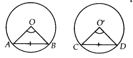
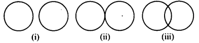
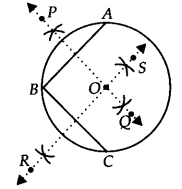

NCERT Solutions for Class 9 Maths Chapter 10 Circles Ex 10.1 are part of NCERT Solutions for Class 9 Maths. Here we have given NCERT Solutions for Class 9 Maths Chapter 10 Circles Ex 10.1.
NCERT Solutions for Class 9 Maths Chapter 10 Circles Ex 10.1
Ex 10.1 Class 9 Maths Question 1.
Fill in the blanks.
(i) The centre of a circle lies in ___ of the circle. (exterior/interior)
(ii) A point, whose distance from the centre of a circle is greater than its radius lies in ____ of the circle, (exterior/interior)
(iii) The longest chord of a circle is a ____ of the circle.
(iv) An arc is a ____ when its ends are the ends of a diameter.
(v) Segment of a circle is the region between an arc and ____ of the circle.
(vi) A circle divides the plane, on which it lies, in ____ parts.
Solution:
(i) interior
(ii) exterior
(iii) diameter
(iv) semicircle
(v) the chord
(vi) three
Ex 10.1 Class 9 Maths Question 2.
Write True or False. Give reason for your answers.
(i) Line segment joining the centre to any point on the circle is a , radius of the circle.
(ii) A circle has only finite number of equal chords.
(iii) If a circle is divided into three equal arcs, each is a major arc.
(iv) A chord of a circle, which is twice as long as its radius, is a diameter of the circle.
(v) Sector is the region between the chord and its corresponding arc.
(vi) A circle is a plane figure.
Solution:
(i) True [∵ All points on the circle are equidistant from the centre]
(ii) False [ ∵ A circle can have an infinite number of equal chords]
(iii) False [∵ Each part will be less than a semicircle]
(iv) True [ ∵ Diameter = 2 x Radius]
(v) False [ ∵ The region between the chord and its corresponding arc is a segment]
(vi) True [ ∵ A circle is drawn on a plane]
NCERT Solutions for Class 9 Maths Chapter 10 Circles (वृत्त) (Hindi Medium) Ex 10.1
NCERT Solutions for Class 9 Maths Chapter 10 Circles Ex 10.2
Ex 10.2 Class 9 Maths Question 1.
Recall that two circles are congruent, if they have the same radii. Prove that equal chords of congruent circles subtend equal angles at their centres
Solution:
Given: Two congruent circles with centres O and O’ and radii r, which have chords AB and CD respectively such that AB = CD.
To Prove: ∠AOB = ∠CO’D
Proof: In ∆AOB and ∆CO’D, we have
AB = CD [Given]
OA = O’C [Each equal to r]
OB = O’D [Each equal to r]
∴ ∆AOB ≅ ∆CO’D [By SSS congruence criteria]
⇒ ∠AOB = ∠CO’D [C.P.C.T.]

Ex 10.2 Class 9 Maths Question 2.
Prove that, if chords of congruent circles subtend equal angles at their centres, then the chords are equal.
Solution:
Given: Two congruent circles with centres O & O’ and radii r which have chords AB and CD respectively such that ∠AOB = ∠CO’D.
To Prove: AB = CD
Proof: In ∆AOB and ∆CO’D, we have
OA = O’C [Each equal to r]
OB = O’D [Each equal to r]
∠AOB = ∠CO’D [Given]
∴ ∆AOB ≅ ∆CO’D [By SAS congruence criteria]
Hence, AB = CD [C.P.C.T.]
NCERT Solutions for Class 9 Maths Chapter 10 Circles Ex 10.3
Ex 10.3 Class 9 Maths Question 1.
Draw different pairs of circles. How many points does each pair have in common? What is the maximum number of common points?
Solution:
Let us draw different pairs of circles as shown below:

We have
| Figure | Maximum number of common points |
| (i) | nil |
| (ii) | one |
| («i) | two |
Thus, two circles can have at the most two points in common.
Ex 10.3 Class 9 Maths Question 2.
Suppose you are given a circle. Give a construction to find its centre.
Solution:
Steps of construction :
Step I : Take any three points on the given circle. Let these points be A, B and C.
Step II : Join AB and BC.
Step III : Draw the perpendicular bisector, PQ of AB.
Step IV: Draw the perpendicular bisector, RS of BC such that it intersects PQ at O.

Thus, ‘O’ is the required centre of the given drcle.
Ex 10.3 Class 9 Maths Question 3.
If two circles intersect at two points, prove that their centres lie on the perpendicular bisector of the common chord.
Solution:
We have two circles with centres O and O’, intersecting at A and B.
∴ AB is the common chord of two circles and OO’ is the line segment joining their centres.
Let OO’ and AB intersect each other at M.
∴ To prove that OO’ is the perpendicular bisector of AB,
we join OA, OB, O’A and O’B. Now, in ∆QAO’ and ∆OBO’,
we have
OA = OB [Radii of the same circle]
O’A = O’B [Radii of the same circle]
OO’ = OO’ [Common]
∴ ∆OAO’ ≅ ∆OBO’ [By SSS congruence criteria]
⇒ ∠1 = ∠2 , [C.P.C.T.]
Now, in ∆AOM and ∆BOM, we have
OA = OB [Radii of the same circle]
OM = OM [Common]
∠1 = ∠2 [Proved above]
∴ ∆AOM = ∆BOM [By SAS congruence criteria]
⇒ ∠3 = ∠4 [C.P.C.T.]
But ∠3 + ∠4 = 180° [Linear pair]
∴∠3=∠4 = 90°
⇒ AM ⊥ OO’
Also, AM = BM [C.P.C.T.]
⇒ M is the mid-point of AB.
Thus, OO’ is the perpendicular bisector of AB.
NCERT Solutions for Class 9 Maths Chapter 10 Circles Ex 10.4
Ex 10.4 Class 9 Maths Question 1.
Two circles of radii 5 cm and 3 cm intersect at two points and the distance between their centres is 4 cm. Find the length of the common chord.
Solution:
We have two intersecting circles with centres at O and O’ respectively. Let PQ be the common chord.
∵ In two intersecting circles, the line joining their centres is perpendicular bisector of the common chord.
∴∠OLP = ∠OLQ = 90° and PL = LQ
Now, in right ∆OLP, we have
PL2 + OL2 = 2
⇒ PL2 + (4 – x)2 = 52
⇒ PL2 = 52 – (4 – x)2
⇒ PL2 = 25 -16 – x2 + 8x
⇒ PL2 = 9 – x2 + 8x …(i)
Again, in right ∆O’LP,
PL2 = PO‘2 – LO‘2
= 32 – x2 = 9 – x2 …(ii)
From (i) and (ii), we have
9 – x2 + 8x = 9 – x2
⇒ 8x = 0
⇒ x = 0
⇒ L and O’ coincide.
∴ PQ is a diameter of the smaller circle.
⇒ PL = 3 cm
But PL = LQ
∴ LQ = 3 cm
∴ PQ = PL + LQ = 3cm + 3cm = 6cm
Thus, the required length of the common chord = 6 cm.
Ex 10.4 Class 9 Maths Question 2.
If two equal chords of a circle intersect within the circle, prove that the segments of one chord are equal to corresponding segments of the other chord.
Solution:
Given: A circle with centre O and equal chords AB and CD intersect at E.
To Prove: AE = DE and CE = BE
Construction : Draw OM ⊥ AB and ON ⊥ CD.
Join OE.
Proof: Since AB = CD [Given]
∴ OM = ON [Equal chords are equidistant from the centre]
Now, in ∆OME and ∆ONE, we have
∠OME = ∠ONE [Each equal to 90°]
OM = ON [Proved above]
OE = OE [Common hypotenuse]
∴ ∆OME ≅ ∆ONE [By RHS congruence criteria]
⇒ ME = NE [C.P.C.T.]
Adding AM on both sides, we get
⇒ AM + ME = AM + NE
⇒ AE = DN + NE = DE
∵ AB = CD ⇒ \(\frac { 1 }{ 2 }AB\) = \(\frac { 1 }{ 2 }DC\)
⇒ AM = DN
⇒ AE = DE …(i)
Now, AB – AE = CD – DE
⇒ BE = CE …….(ii)
From (i) and (ii), we have
AE = DE and CE = BE
Ex 10.4 Class 9 Maths Question 3.
If two equal chords of a circle intersect within the circle, prove that the line joining the point of intersection to the centre makes equal angles with the chords.
Solution:
Given: A circle with centre O and equal chords AB and CD are intersecting at E.
To Prove : ∠OEA = ∠OED
Construction: Draw OM ⊥ AB and ON ⊥ CD.
Join OE.
Proof: In ∆OME and ∆ONE,
OM = ON
[Equal chords are equidistant from the centre]
OE = OE [Common hypotenuse]

∠OME = ∠ONE [Each equal to 90°]
∴ ∆OME ≅ ∆ONE [By RHS congruence criteria]
⇒ ∠OEM = ∠OEN [C.P.C.T.]
⇒ ∠OEA = ∠OED
Ex 10.4 Class 9 Maths Question 4.
If a line intersects two concentric circles (circles with the same centre) with centre 0 at A, B, C and D, prove that AB = CD (see figure).
Solution:
Given : Two circles with the common centre O.
A line D intersects the outer circle at A and D and the inner circle at B and C.
To Prove : AB = CD.
Construction:
Draw OM ⊥ l.
Proof: For the outer circle,
OM ⊥ l [By construction]
∴ AM = MD …(i)
[Perpendicular from the centre to the chord bisects the chord]
For the inner circle,
OM ⊥ l [By construction]
∴ BM = MC …(ii)
[Perpendicular from the centre to the chord bisects the chord]
Subtracting (ii) from (i), we have
AM – BM = MD – MC
⇒ AB = CD
Ex 10.4 Class 9 Maths Question 5.
Three girls Reshma, Salma and Mandip are playing a game by standing on a circle of radius 5m drawn in a park. Reshma throws a ball to Salma, Salma to Mandip, Mandip to Reshma. If the distance between Reshma and Salma and between Salma and Mandip is 6 m each, what is the distance between Reshma and Mandip?
Solution:
Let the three girls Reshma, Salma and Mandip be positioned at R, S and M respectively on the circle with centre O and radius 5 m such that
RS = SM = 6 m [Given]
Equal chords of a circle subtend equal angles at the centre.
∴ ∠1 = ∠2
In ∆POR and ∆POM, we have
OP = OP [Common]
OR = OM [Radii of the same circle]
∠1 = ∠2 [Proved above]
∴ ∆POR ≅ ∆POM [By SAS congruence criteria]
∴ PR = PM and
∠OPR = ∠OPM [C.P.C.T.]
∵∠OPR + ∠OPM = 180° [Linear pair]
∴∠OPR = ∠OPM = 90°
⇒ OP ⊥ RM
Now, in ∆RSP and ∆MSP, we have
RS = MS [Each 6 cm]
SP = SP [Common]
PR = PM [Proved above]
∴ ∆RSP ≅ ∆MSP [By SSS congruence criteria]
⇒ ∠RPS = ∠MPS [C.P.C.T.]
But ∠RPS + ∠MPS = 180° [Linear pair]
⇒ ∠RPS = ∠MPS = 90°
SP passes through O.
Let OP = x m
∴ SP = (5 – x)m
Now, in right ∆OPR, we have
x2 + RP2 = 52
RP2 = 52 – x2
In right ∆SPR, we have
(5 – x)2 + RP2 = 62
⇒ RP2 = 62 – (5 – x)2 ……..(ii)
From (i) and (ii), we get
⇒ 52 – x2 = 62 – (5 – x)2
⇒ 25 – x2 = 36 – [25 – 10x + x2]
⇒ – 10x + 14 = 0
⇒ 10x = 14 ⇒ x = \(\frac { 14 }{ 10 }\) = 1.4
Now, RP2 = 52 – x2
⇒ RP2 = 25 – (1.4)2
⇒ RP2 = 25 – 1.96 = 23.04
∴ RP = \(\sqrt { 23.04 }\)= 4.8
∴ RM = 2RP = 2 x 4.8 = 9.6
Thus, distance between Reshma and Mandip is 9.6 m.
Ex 10.4 Class 9 Maths Question 6.
A circular park of radius 20 m is situated in a colony. Three boys Ankur, Syed and David are sitting at equal distance on its boundary each having a toy telephone in his hands to talk each other. Find the length of the string of each phone.
Solution:
Let Ankur, Syed and David are sitting at A, S and D respectively in the circular park with centre O such that AS = SD = DA
i. e., ∆ASD is an equilateral triangle.
Let the length of each side of the equilateral triangle be 2x.
Draw AM ⊥ SD.
Since ∆ASD is an equilateral triangle.
∴ AM passes through O.
⇒ SM = \(\frac { 1 }{ 2 }\) SD = \(\frac { 1 }{ 2 }\) (2x)
⇒ SM = x
Now, in right ∆ASM, we have
AM2 + SM2 = AS2 [Using Pythagoras theorem]
⇒ AM2= AS2 – SM2= (2x)2 – x2
= 4x2 – x2 = 3x2
⇒ AM = \(\sqrt { 3x }\)m
Now, OM = AM – OA= (\(\sqrt { 3x }\) – 20)m
Again, in right ∆OSM, we have
OS2 = SM2 + OM2 [using Pythagoras theorem]
202 = x2 + (\(\sqrt { 3x }\) – 20)2
⇒ 400 = x2 + 3x2 – 40\(\sqrt { 3x }\) + 400
⇒ 4x2 = 40 \(\sqrt { 3x }\)
⇒ x = 10√3 m
Now, SD = 2x = 2 x 10√3 m = 20√3 m
Thus, the length of the string of each phone = 20√3 m
NCERT Solutions for Class 9 Maths Chapter 10 Circles Ex 10.5
Ex 10.5 Class 9 Maths Question 1.
In figure A,B and C are three points on a circle with centre 0 such that ∠BOC = 30° and ∠ AOB = 60°. If D is a point on the circle other than the arc ABC, find ∠ ADC.

Solution:
We have a circle with centre O, such that
∠AOB = 60° and ∠BOC = 30°
∵∠AOB + ∠BOC = ∠AOC
∴ ∠AOC = 60° + 30° = 90°
The angle subtended by an arc at the circle is half the angle subtended by it at the centre.
∴ ∠ ADC = \(\frac { 1 }{ 2 }\) (∠AOC) = \(\frac { 1 }{ 2 }\)(90°) = 45°
Ex 10.5 Class 9 Maths Question 2.
A chord of a circle is equal to the radius of the circle, find the angle subtended by the chord at a point on the minor arc and also at a point on the major arc.
Solution:
We have a circle having a chord AB equal to radius of the circle.
∴ AO = BO = AB
⇒ ∆AOB is an equilateral triangle.
Since, each angle of an equilateral triangle is 60°.
⇒ ∠AOB = 60°
Since, the arc ACB makes reflex ∠AOB = 360° – 60° = 300° at the centre of the circle and ∠ACB at a point on the minor arc of the circle.
Hence, the angle subtended by the chord on the minor arc = 150°.
Similarly, ∠ADB = \(\frac { 1 }{ 2 }\) [∠AOB] = \(\frac { 1 }{ 2 }\) x 60° = 30°
Hence, the angle subtended by the chord on the major arc = 30°
Ex 10.5 Class 9 Maths Question 3.
In figure, ∠PQR = 100°, where P, Q and R are points on a circle with centre O. Find ∠OPR.
Solution:
The angle subtended by an arc of a circle at its centre is twice the angle subtended by the same arc at a point pn the circumference.
∴ reflex ∠POR = 2∠PQR
But ∠PQR = 100°
∴ reflex ∠POR = 2 x 100° = 200°
Since, ∠POR + reflex ∠POR = 360°
⇒ ∠POR = 360° – 200°
⇒ ∠POR = 160°
Since, OP = OR [Radii of the same circle]
∴ In ∆POR, ∠OPR = ∠ORP
[Angles opposite to equal sides of a triangle are equal]
Also, ∠OPR + ∠ORP + ∠POR = 180°
[Sum of the angles of a triangle is 180°]
⇒ ∠OPR + ∠ORP + 160° = 180°
⇒ 2∠OPR = 180° -160° = 20° [∠OPR = ∠ORP]
⇒ ∠OPR = \(\frac { { 20 }^{ \circ } }{ 2 } \) = 10°
Ex 10.5 Class 9 Maths Question 4.
In figure, ∠ABC = 69°,∠ACB = 31°, find ∠BDC.
Solution:
In ∆ABC, ∠ABC + ∠ACB + ∠BAC = 180°
⇒ 69° + 31° + ∠BAC = 180°
⇒ ∠BAC = 180° – 100° = 80°
Since, angles in the same segment are equal.
∴∠BDC = ∠BAC ⇒ ∠BDC = 80°
Ex 10.5 Class 9 Maths Question 5.
In figure, A, B and C are four points on a circle. AC and BD intersect at a point E such that ∠ BEC = 130° and ∠ ECD = 20°. Find ∠BAC.
Solution:
∠BEC = ∠EDC + ∠ECD
[Sum of interior opposite angles is equal to exterior angle]
⇒ 130° = ∠EDC + 20°
⇒ ∠EDC = 130° – 20° = 110°
⇒ ∠BDC = 110°
Since, angles in the same segment are equal.
∴ ∠BAC = ∠BDC
⇒ ∠BAC = 110°
Ex 10.5 Class 9 Maths Question 6.
ABCD is a cyclic quadrilateral whose diagonals intersect at a point E. If ∠DBC = 70°, ∠BAC is 30°, find ∠BCD. Further, if AB = BC, find ∠ECD.
Solution:
Since angles in the same segment of a circle are equal.
∴ ∠BAC = ∠BDC
⇒ ∠BDC = 30°
lso, ∠DBC = 70° [Given]
In ∆BCD, we have
∠BCD + ∠DBC + ∠CDB = 180° [Sum of angles of a triangle is 180°]
⇒ ∠BCD + 70° + 30° = 180°
⇒ ∠BCD = 180° -100° = 80°
Now, in ∆ABC,
AB = BC [Given]
∴ ∠BCA = ∠BAC [Angles opposite to equal sides of a triangle are equal]
⇒ ∠BCA = 30° [∵ ∠B AC = 30°]
Now, ∠BCA + ∠BCD = ∠BCD
⇒ 30° + ∠ECD = 80°
⇒ ∠BCD = 80° – 30° = 50°
Ex 10.5 Class 9 Maths Question 7.
If diagonals of a cyclic quadrilateral are diameters of the circle through the vertices of the quadrilateral, prove that it is a rectangle.
Solution:
Since AC and BD are diameters.
⇒ AC = BD …(i) [All diameters of a circle are equal]
Also, ∠BAD = 90° [Angle formed in a semicircle is 90°]
Similarly, ∠ABC = 90°, ∠BCD = 90°
and ∠CDA = 90°
Now, in ∆ABC and ∆BAD, we have
AC = BD [From (i)]
AB = BA [Common hypotenuse]
∠ABC = ∠BAD [Each equal to 90°]
∴ ∆ABC ≅ ∆BAD [By RHS congruence criteria]
⇒ BC = AD [C.P.C.T.]
Similarly, AB = DC
Thus, the cyclic quadrilateral ABCD is such that its opposite sides are equal and each of its angle is a right angle.
∴ ABCD is a rectangle.
Ex 10.5 Class 9 Maths Question 8.
If the non – parallel sides of a trapezium are equal, prove that it is cyclic.
Solution:
We have a trapezium ABCD such that AB ॥ CD and AD = BC.
Let us draw BE ॥ AD such that ABED is a parallelogram.
∵ The opposite angles and opposite sides of a parallelogram are equal.
∴ ∠BAD = ∠BED …(i)
and AD = BE …(ii)
But AD = BC [Given] …(iii)
∴ From (ii) and (iii), we have BE = BC
⇒ ∠BCE = ∠BEC … (iv) [Angles opposite to equal sides of a triangle are equal]
Now, ∠BED + ∠BEC = 180° [Linear pair]
⇒ ∠BAD + ∠BCE = 180° [Using (i) and (iv)]
i.e., A pair of opposite angles of a quadrilateral ABCD is 180°.
∴ ABCD is cyclic.
⇒ The trapezium ABCD is cyclic.
Ex 10.5 Class 9 Maths Question 9.
Two circles intersect at two points B and C. Through B, two line segments ABD and PBQ are drawn to intersect the circles at A,D and P, Q respectively (see figure). Prove that ∠ ACP = ∠QCD.
Solution:
Since, angles in the same segment of a circle are equal.
∴ ∠ACP = ∠ABP …(i)
Similarly, ∠QCD = ∠QBD …(ii)
Since, ∠ABP = ∠QBD …(iii) [Vertically opposite angles]
∴ From (i), (ii) and (iii), we have
∠ACP = ∠QCD
Ex 10.5 Class 9 Maths Question 10.
If circles are drawn taking two sides of a triangle as diameters, prove that the point of intersection of these circles lie on the third side.
Solution:
We have ∆ABC, and two circles described with diameter as AB and AC respectively. They intersect at a point D, other than A.
Let us join A and D.
∵ AB is a diameter.
∴∠ADB is an angle formed in a semicircle.
⇒ ∠ADB = 90° ……(i)
Similarly, ∠ADC = 90° ….(ii)
Adding (i) and (ii), we have
∠ADB + ∠ADC = 90° + 90° = 180°
i. e., B, D and C are collinear points.
⇒ BC is a straight line. Thus, D lies on BC.
Ex 10.5 Class 9 Maths Question 11.
ABC and ADC are two right angled triangles with common hypotenuse AC. Prove that ∠CAD = ∠CBD.
Solution:
We have ∆ABC and ∆ADC such that they are having AC as their common hypotenuse and ∠ADC = 90° = ∠ABC
∴ Both the triangles are in semi-circle.
Case – I: If both the triangles are in the same semi-circle.
⇒ A, B, C and D are concyclic.
Join BD.
DC is a chord.
∴ ∠CAD and ∠CBD are formed in the same segment.
⇒ ∠CAD = ∠CBD
Case – II : If both the triangles are not in the same semi-circle.
⇒ A,B,C and D are concyclic. Join BD. DC is a chord.
∴ ∠CAD and ∠CBD are formed in the same segment.
⇒ ∠CAD = ∠CBD
Ex 10.5 Class 9 Maths Question 12.
Prove that a cyclic parallelogram is a rectangle.
Solution:
We have a cyclic parallelogram ABCD. Since, ABCD is a cyclic quadrilateral.
∴ Sum of its opposite angles is 180°.
⇒ ∠A + ∠C = 180° …(i)
But ∠A = ∠C …(ii)
[Opposite angles of a parallelogram are equal]
From (i) and (ii), we have
∠A = ∠C = 90°
Similarly,
∠B = ∠D = 90°
⇒ Each angle of the parallelogram ABCD is 90°.
Thus, ABCD is a rectangle.
NCERT Solutions for Class 9 Maths Chapter 10 Circles Ex 10.6
Ex 10.6 Class 9 Maths Question 1.
Prove that the line of centres of two intersecting circles subtends equal angles at the two points of intersection.
Solution:
Given : Two circles with centres O and O’ respectively such that they intersect each other at P and Q.
To Prove: ∠OPO’ = ∠OQO’.
Construction : Join OP, O’P, OQ, O’Q and OO’.
Proof: In ∆OPO’ and ∆OQO’, we have
OP = OQ [Radii of the same circle]
O’P = O’Q [Radii of the same circle]
OO’ = OO’ [Common]
∴ AOPO’ = AOQO’ [By SSS congruence criteria]
⇒ ∠OPO’ = ∠OQO’ [C.P.C.T.]
Ex 10.6 Class 9 Maths Question 2.
Two chords AB and CD of lengths 5 cm and 11 cm, respectively of a circle are parallel to each other and are on opposite sides of its centre. If the distance between AB and CD is 6 cm, find the radius of the circle.
Solution:
We have a circle with centre O.
AB || CD and the perpendicular distance between AB and CD is 6 cm and AB = 5 cm, CD = 11 cm.
Let r cm be the radius of the circle.
Let us draw OP ⊥ AB and OQ ⊥ CD such that
PQ = 6 cm
Join OA and OC.
Let OQ = x cm
∴ OP = (6 – x) cm
∵ The perpendicular drawn from the centre of a circle to chord bisects the chord.
Ex 10.6 Class 9 Maths Question 3.
The lengths of two parallel chords of a circle are 6 cm and 8 cm. If the smaller chord is at distance 4 cm from the centre, what is the distance of the other chord from the centre ?
Solution:
We have a circle with centre O. Parallel chords AB and CD are such that the smaller chord is 4 cm away from the centre.
Let r cm be the radius of the circle and draw OP ⊥ AB and join OA and OC.
∵ OP ⊥ AB
∴ P is the mid-point of AB.
⇒ AP = \(\frac { 1 }{ 2 }AB\) = \(\frac { 1 }{ 2 }(6 cm)\) = 3 cm
Similarly, CQ = \(\frac { 1 }{ 2 }CD\) = \(\frac { 1 }{ 2 }(8 cm)\)= 4 cm
Now in ∆OPA, we have OA2 = OP2 + AP2
⇒ r2 = 42 + 32
⇒ r2 = 16 + 9 = 25
⇒ r = \(\sqrt { 25 }\) =5
Again, in ∆CQO, we have OC2 = OQ2 + CQ2
⇒ r2 = OQ2 + 42
⇒ OQ2 = r2 – 42
⇒ OQ2 = 52 – 42 = 25 – 16 = 9 [∵ r = 5]
⇒ OQ
⇒ √9 = 3
The distance of the other chord (CD) from the centre is 3 cm.
Note: In case if we take the two parallel chords on either side of the centre, then
In ∆POA, OA2 = OP2 + PA2
⇒ r2 = 42 + 32 = 52
⇒ r = 5
In ∆QOC, OC2 = CQ2 + OQ2
⇒ OQ2 = 42 + OQ2
⇒ OQ2 = 52 – 42 = 9
⇒ OQ = 3
Ex 10.6 Class 9 Maths Question 4.
Let the vertex of an angle ABC be located outside a circle and let the sides of the angle intersect equal chords AD and CE with the circle. Prove that ∠ABC is equal to half the difference of the angles subtended by the chords AC and DE at the centre.
Solution:
Given : ∠ABC is such that when we produce arms BA and BC, they make two equal chords AD and CE.
To prove: ∠ABC = \(\frac { 1 }{ 2 }\) [∠DOE – ∠AOC]
Construction: Join AE.
Proof: An exterior angle of a triangle is equal to the sum of interior opposite angles.
∴ In ∆BAE, we have
∠DAE = ∠ABC + ∠AEC ……(i)
The chord DE subtends ∠DOE at the centre and ∠DAE in the remaining part of the circle.

⇒ ∠ABC = \(\frac { 1 }{ 2 }\) [(Angle subtended by the chord DE at the centre) – (Angle subtended by the chord AC at the centre)]
⇒ ∠ABC = \(\frac { 1 }{ 2 }\) [Difference of the angles subtended by the chords DE and AC at the centre]
Ex 10.6 Class 9 Maths Question 5.
Prove that the circle drawn with any side of a rhombus as diameter, passes through the point of intersection of its diagonals.
Solution:
We have a rhombus ABCD such that its diagonals AC and BD intersect at O.
Taking AB as diameter, a circle is drawn. Let us draw PQ || DA and RS || AB, both are passing through O.
P, Q, R and S are the mid-points of DC, AB, AD and BC respectively,
∵ Q is the mid-point of AB.
⇒ AQ = QB …(i)
Since AD = BC [ ∵ ABCD is a rhombus]
∴ \(\frac { 1 }{ 2 }\) AD = \(\frac { 1 }{ 2 }\) BC
⇒ RA = SB
⇒ RA = OQ …(ii)
[ ∵ PQ is drawn parallel to AD and AD = BC]
We have, AB = AD [Sides of rhombus are equal]
⇒ \(\frac { 1 }{ 2 }\) AB = \(\frac { 1 }{ 2 }\) AD
⇒ AQ = AR …(iii)
From (i), (ii) and (iii), we have AQ = QB = OQ
i.e. A circle drawn with Q as centre, will pass through A, B and O.
Thus, the circle passes through the of intersection ‘O’ of the diagonals rhombus ABCD.
Ex 10.6 Class 9 Maths Question 6.
ABCD is a parallelogram. The circle through A, B and C intersect CD (produced if necessary) at E. Prove that AE = AD.
Solution:
We have a circle passing through A, B and C is drawn such that it intersects CD at E.
ABCE is a cyclic quadrilateral.
∴∠AEC + ∠B = 180° …(i)
[Opposite angles of a cyclic quadrilateral are supplementary] But ABCD is a parallelogram. [Given]
∴∠D = ∠B …(ii)
[Opposite angles of a parallelogram are equal]
From (i) and (ii), we have
∠AEC + ∠D = 180° …(iii)
But ∠AEC + ∠AED = 180° [Linear pair] …(iv)
From (iii) and (iv), we have ∠D = ∠AED
i.e., The base angles of AADE are equal.
∴ Opposite sides must be equal.
⇒ AE = AD
Ex 10.6 Class 9 Maths Question 7.
AC and BD are chords of a circle which bisect each other. Prove that
(i) AC and BD are diameters,
(ii) ABCD is a rectangle.
Solution:
Given: A circle in which two chords AC and BD are such that they bisect each other. Let their point’of intersection be O.
To Prove: (i) AC and BD are diameters.
(ii) ABCD is a rectangle.
Construction: Join AB, BC, CD and DA.
Proof: (i) In ∆AOB and ∆COD, we have
AO = CO [O is the mid-point of AC]
BO = DO [O is the mid-point of BD]
∠AOB = ∠COD [Vertically opposite angles]
∴ Using the SAS criterion of congruence,
∆AOB ≅ ∆COD
⇒ AB = CD [C.P.C.T.]
⇒ arc AB = arc CD …(1)
Similarly, arc AD = arc BC …(2)
Adding (1) and (2), we get
arc AB + arc AD = arc CD + arc BC
⇒
⇒ BD divides the circle into two equal parts.
∴ BD is a diameter.
Similarly, AC is a diameter.
(ii) We know that ∆AOB ≅ ∆COD
⇒ ∠OAB = ∠OCD [C.P.C.T]
⇒ ∠CAB = ∠ACD
AB || DC
Similarly, AD || BC
∴ ABCD is a parallelogram.
Since, opposite angles of a parallelogram are equal.
∴ ∠DAB = ∠DCB
But ∠DAB + ∠DCB = 180°
[Sum of the opposite angles of a cyclic quadrilateral is 180°]
⇒ ∠DAB = 90° = ∠DCB Thus, ABCD is a rectangle.
Ex 10.6 Class 9 Maths Question 8.
Bisectors of angles A, B and C of a ∆ABC intersect its circumcircle at D, E and F, respectively. Prove that the angles of the ∆DEF are 90° – \(\frac { 1 }{ 2 }\) A, 90° – \(\frac { 1 }{ 2 }\) B and 90° – \(\frac { 1 }{ 2 }\) C.
Solution:
Given : A triangle ABC inscribed in a drcle, such that bisectors of ∠A, ∠B and ∠C intersect the circumcircle at D, £ and F respectively.
Construction: Join DE, EF and FD.
Proof:
∵ Angles in the same segment are equal.
∴ ∠ED A = ∠FCA …(i)
∠EDA = ∠EBA …(ii)
Adding (i) and (ii), we have
∠FDA + ∠EDA = ∠FCA + ∠EBA
⇒ ∠FDE = ∠FCA + ∠EBA
Ex 10.6 Class 9 Maths Question 9.
Two congruent circles intersect each other at points A and B. Through A any line segment PAQ is drawn so that P, Q lie on the two circles. Prove that BP = BQ.
Solution:
We have two congruent circles such that they intersect each other at A and B. A line segment passing through A, meets the circles at P and Q.
Let us draw the common chord AB.
Since angles subtended by equal chords in the congruent circles are equal.
⇒ ∠APB = ∠AQB
Now, in ∆PBQ, we have ∠AQB = ∠APB
So, their opposite sides must be equal.
⇒ BP = BQ.
Ex 10.6 Class 9 Maths Question 10.
In any ∆ ABC, if the angle bisector of ∠A and perpendicular bisector of BC intersect, prove that they intersect on the circumcircle of the ∆ABC.
Solution:
∆ABC with O as centre of its circumcirde. The perpendicular bisector of BC passes through O. Join OB and OC. Suppose it cuts circumcirde at P.
In order to prove that the perpendicular bisector of BC and bisector of angle A of ∆ABC intersect at P, it is sufficient to show that AP is bisector of ∠A of ∆ABC.
Arc BC makes angle θ at the circumference
∴ ∠BOC = 2θ
[Angle at centre is double the angle made by an arc at circumference]
Also, in ∆BOC, OB=OC and OP is perpendicular bisector of BC.
So, ∠BOP = ∠COP = θ
Arc CP makes angle θ at O, so it will make
angle [/latex]\frac { \theta }{ 2 }[/latex] at circumference.
So, ∠COP = [/latex]\frac { \theta }{ 2 }[/latex]
Hence, AP is the angle bisedor of ∠A of ∆ABC.
NCERT Solutions for Class 9 Maths
- Chapter 1 Number systems
- Chapter 2 Polynomials
- Chapter 3 Coordinate Geometry
- Chapter 4 Linear Equations in Two Variables
- Chapter 5 Introduction to Euclid Geometry
- Chapter 6 Lines and Angles
- Chapter 7 Triangles
- Chapter 8 Quadrilaterals
- Chapter 9 Areas of Parallelograms and Triangles
- Chapter 10 Circles
- Chapter 11 Constructions
- Chapter 12 Heron’s Formula
- Chapter 13 Surface Areas and Volumes
- Chapter 14 Statistics
- Chapter 15 Probability
- Class 9 Maths (Download PDF)
We hope the NCERT Solutions for Class 9 Maths Chapter 10 Circles Ex 10.1 help you. If you have any query regarding NCERT Solutions for Class 9 Maths Chapter 10 Circles Ex 10.1, drop a comment below and we will get back to you at the earliest.